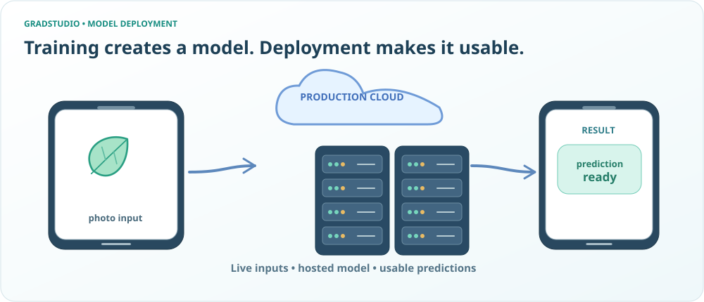
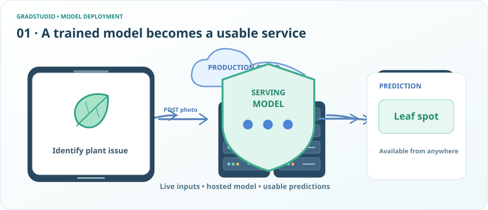
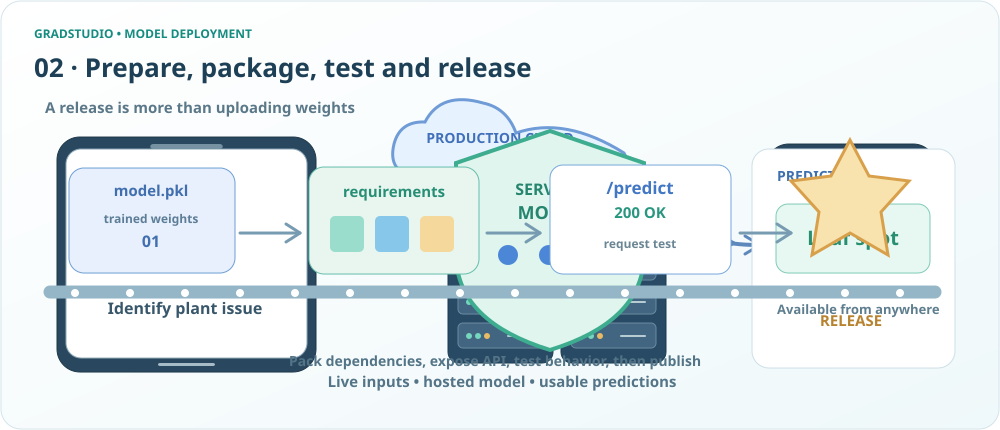
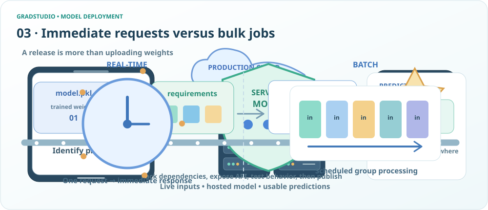
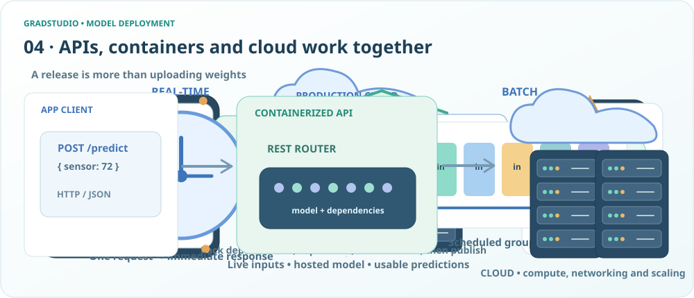
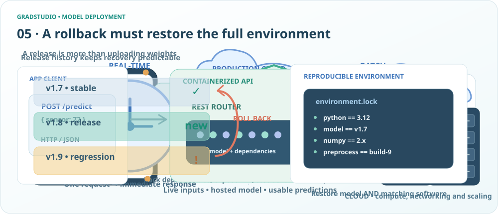
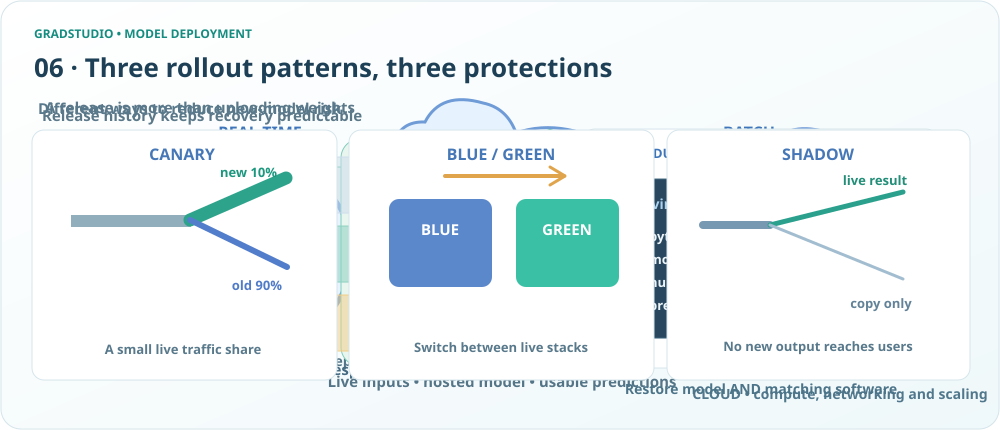
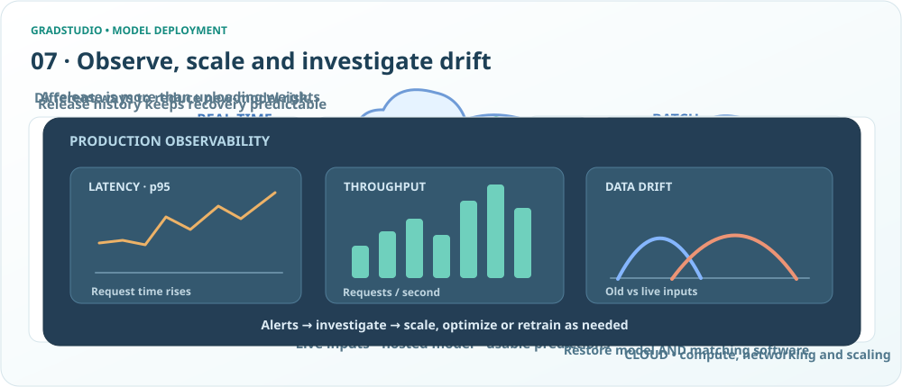

Model Deployment · Agent 2 visual staging
An application requests a prediction from a hosted model

Phone photo to cloud-hosted model servers and returned live prediction.
Users send new inputs and receive live outputs

Garden photo sent from app via POST to deployed inference model and a leaf spot prediction returned.
Deployment assembly line of model files tests and release

Model package, versioned dependencies, tested prediction endpoint and release symbol arranged along a conveyor.
Real-time watch compared with batched prediction queue

A clock with one immediately served request contrasts with many input packets processed together on a schedule.
REST API container and elastic cloud servers

An HTTP POST request enters a containerized API and trained model; cloud servers host and replicate this service.
Rollback release history and reproducible dependency lock

Versioned release records show rollback from regression to stable model, with matching software dependencies stored in a lock file.
Canary blue-green and shadow deployment traffic strategies

Three differently drawn release mechanisms: percentage traffic fork, environment switch and mirrored shadow request path.
Production telemetry latency throughput and drift graphs

A service operations cockpit showing rising latency, throughput bars, and shifting live feature distributions.